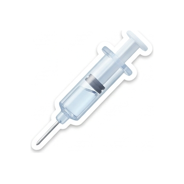

🎯 Reto Ortográfico
Oración de contexto...
Escucha la palabra y arma sus sílabas cuidando la ortografía.
Toca las sílabas en orden para armar la palabra
Toca la sílaba con la ortografía correcta para llenar cada espacio: